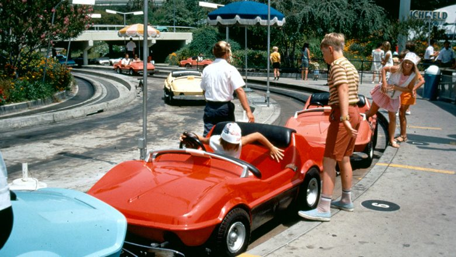
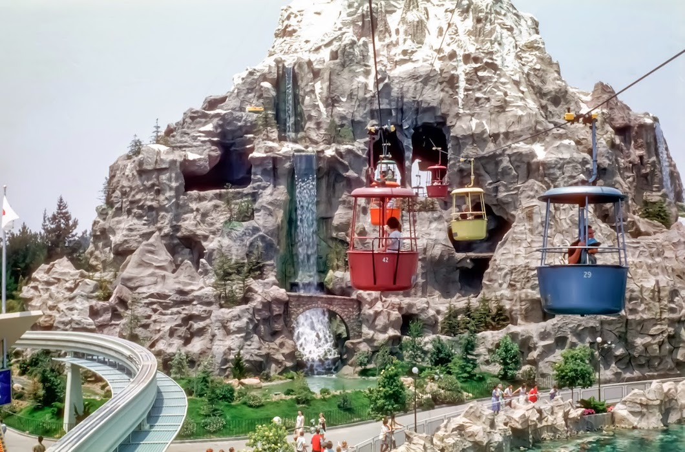
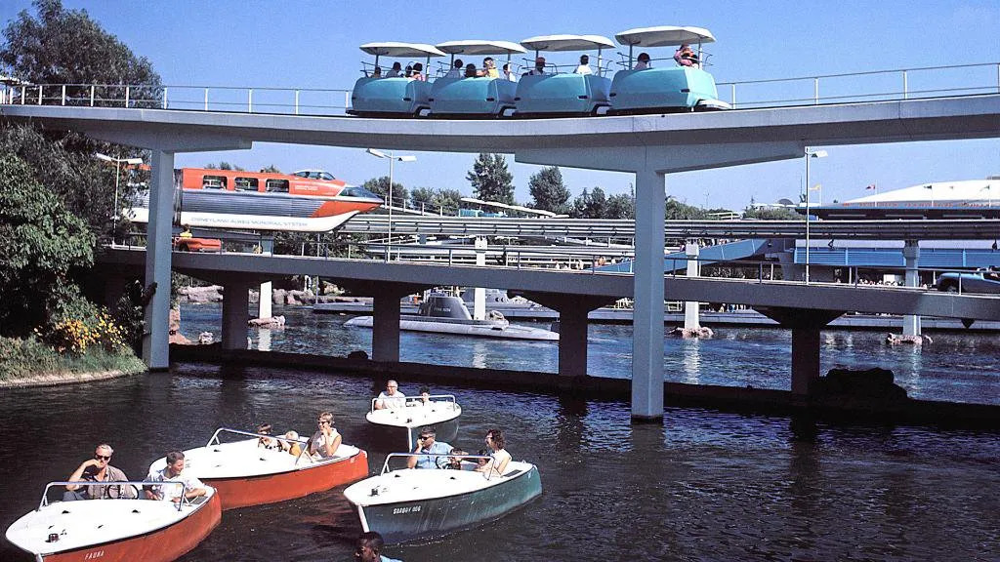

Motor Boat Cruise opened in 1957 on the border between Fantasyland and Tomorrowland. The waterways of the Motor Boat Cruise shared space with other attractions such as the Viewliner train and bridges for Junior Autopia.
Major changes took place in 1959 to the three attractions in the area. The Viewliner and its railroad track were gone. Instead, the elevated beam of the new Disneyland Alweg Monorail curved overhead.
On January 11, 1993, the Motor Boat Cruise closed permanently, in part due to the negative reactions to the Gummi Bears overlay, as well as its operating budget was needed for the nearby Mickey's Toontown. For a time in the mid-1990s this was a smoking area in the park.

Midget Autopia was one of the forms of Autopia to exist at Disneyland. The Midget Autopia opened in 1957 and was manufactured by Arrow Development. It was the smallest and was the third Autopia track, after the Tomorrowland Autopia (1955) and the Junior Autopia in Fantasyland (1956). It was located next to the Storybook Land Canal Boats and the Motor Boat Cruise at the very edge of Fantasyland. Adults were not allowed on the ride. It was closed in 1966 and dismantled to make way for It's a Small World.
The ride was then donated to the city of Marceline, Missouri, where it operated in the Walt Disney Municipal Park for 11 years until parts were no longer available for the cars. One of the cars is on display in the museum whereas the concrete track on which the cars ran was ultimately demolished in 2016 to facilitate replacement of the city pool.
The Skyway was a gondola lift attraction which took riders back and forth between Fantasyland and Tomorrowland, the route from Tomorrowland was called Skyway to Fantasyland, and the route from Fantasyland was called Skyway to Tomorrowland.
The Skyway closed on November 9, 1994. The reason for closure was attributed to metal fatigue. Stress cracks had developed inside the Matterhorn tower battery supports, and the only way to do maintenance was to open up the Matterhorn to do work on it. The Skyway's operating budget was transferred to Indiana Jones and the Temple of the Forbidden Eye. The holes in the Matterhorn were partially filled in and the Skyway's cable and supports were dismantled within weeks. While the Tomorrowland Skyway station at Disneyland was removed soon after the attraction's closure, the Fantasyland Skyway station remained intact until mid-2016.